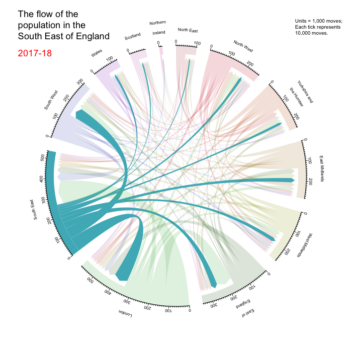

This figure shows the 2018 internal migration flows for the regions of England.
IT IS A WORK IN PROGRESS.
TODO: I still need to fix the tooltips to extract the numbers from the data matrix, I need to fix the axis positions, and the text wrapping as well as the direction and arrows of the flow. My goal is to produce the figure below.
Notice how there is a chord going from an area as well as a chord going into the area. I need to figure out how I am going to achieve this, as well as adding arrows.
